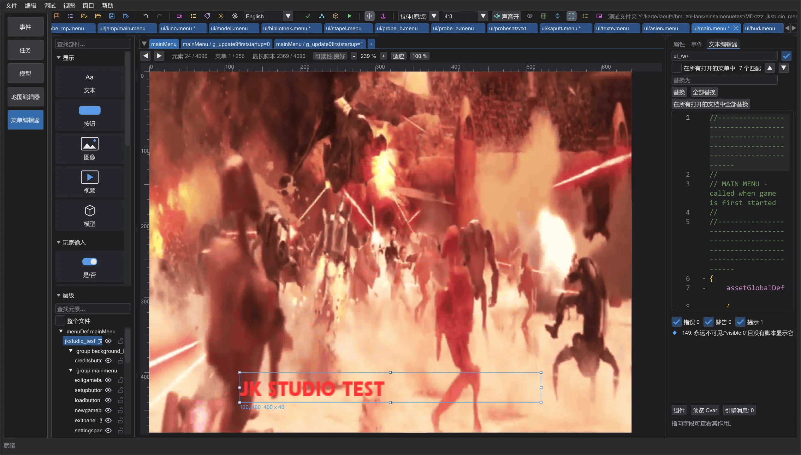
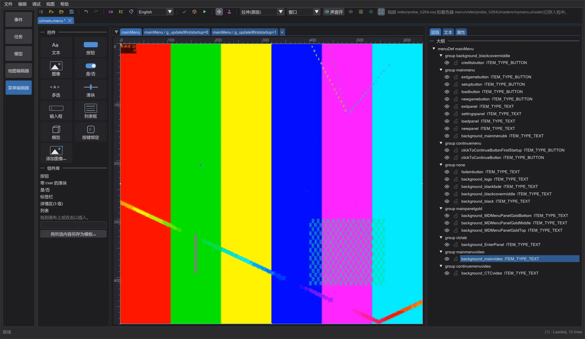
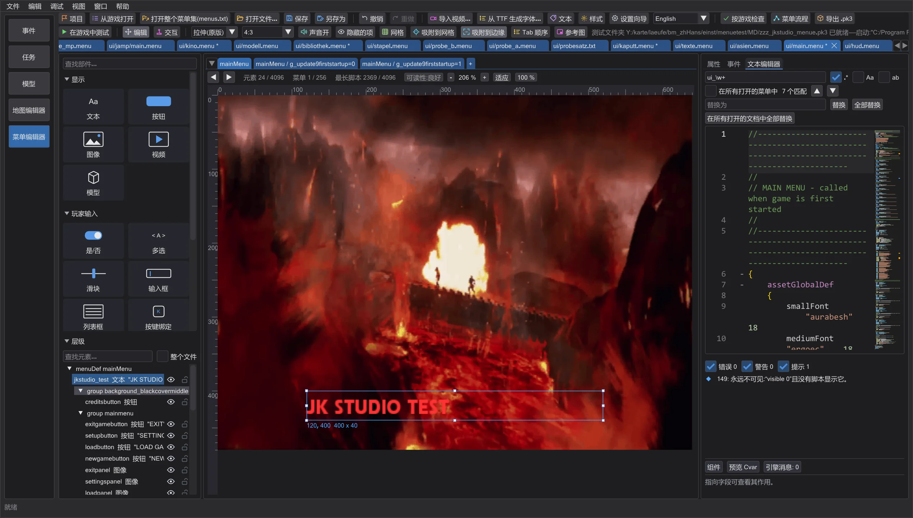

菜单编辑器:视频、声音与易读性
按游戏能够播放的方式导入视频——尺寸、宽高比、帧率、声音、带 videoMap 的着色器——缺少编解码器时给出明确提示,关闭预览声音,并可让工具栏显示文字。
导入视频#

导入视频 通过 Windows 读取 MP4、WebM、AVI、WMV、MOV 和 MKV,也可读取动态 GIF 和 RoQ 文件——RoQ 会原样采用。选择 尺寸(像素):游戏只能播放边长为 2 的幂、总像素最多 512 x 512 的视频(否则全屏视频会中止,更大的视频会溢出游戏的视频缓冲区);默认 512 x 512,与 Jedi Academy 和 Movie Duels 的所有视频相同。宽高比:拉伸(游戏本来就会把视频拉伸到元素上)、黑边 或 裁剪。缩小时会对覆盖到的所有像素取平均,细密图案不会闪烁。选项下方显示时长、帧数以及文件的大小。

菜单通过带 videoMap 的着色器显示视频,单人和多人均可。左侧面板的 视频 放置一个框,选择时会替你写好:在 shaders/<包>.shader 中写入 menu/video/<名称>;来自文件的视频先转换,以 video/<名称>.roq 进入包,游戏视频留在游戏中。工具栏按钮只把视频放入包中。cinematic 只在多人菜单中绘制,单人游戏不显示(检查会指出),因此不提供。着色器、视频和菜单一起进入导出的 .pk3 和 在游戏中测试。
声音#
菜单始终静音播放视频——游戏启动它们时不带声音。因此 保留声音 默认关闭;对于游戏带声音播放的全屏视频(例如从控制台或脚本执行 cinematic <名称>)可以打开它。声音按游戏视频的方式保存:22050 Hz,单声道或立体声,位于帧之间。没有音轨的视频会得到提示。工具栏中的 声音开 / 声音关 切换预览中的所有声音——焦点音、点击音和菜单音乐——并停止正在播放的声音;该设置会被记住。
缺少编解码器#
如果 Windows 无法解码某个视频,对话框会说明是哪种编解码器以及解决办法:HEVC、AV1 和 VP8/VP9 需要 Microsoft Store 中的免费扩展,使用 DivX/Xvid 或未知编解码器的 AVI 文件请转换为 MP4(H.264)。此时不会保存任何内容——不会出现空视频。
易读性#

将鼠标悬停在工具栏图标上,会显示其名称和作用;设置中的 工具栏按钮显示文字 会在每个图标旁写上名称。在层级中,眼睛只在预览中隐藏元素,锁可防止元素被移动。无论用 Ctrl 和鼠标滚轮缩小多少,文字都不会小于正常大小的 75%(12 像素)。